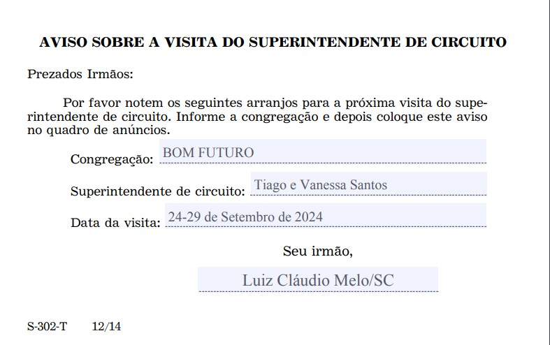

🗓️ 7–13 de outubro
🗓️ 14-20 de outubro
🗓️ 21-27 de outubro
🗓️ 28 de outubro-3 de novembro
🗓️ 4-10 de novembro
🗓️ 11-17 de novembro
🗓️ 18-24 de novembro
🗓️ 25 de novembro–1.° de dezembro
🗓️ 2-8 de dezembro
🗓️ 9-15 de dezembro
🗓️ 16-22 de dezembro
🗓️ 23-29 de dezembro
🗓️ 30 de dezembro–5 de janeiro